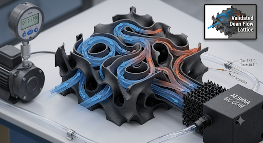

Ontogeny is the biological word for how one organism develops from origin to maturity. Aintogeny is the same idea applied to an individual AI — not a model, a specific one, with a real history that's worth keeping.
The simplest way to say it: this is git, but for an AI's prompt and memory instead of its code. Every version tracked, every regression revertible, every branch accountable to where it came from.
| Git concept | Aintogeny equivalent |
|---|---|
| Commit | A SOMA snapshot — a real, dated state of what's true right now. |
| Branch | A delegated agent, forked off to do bounded work without touching the source. |
| Revert | The eject mechanism — detect corruption, restore the last known-good state, in seconds. |
| Tag / version | Explicit version numbers (v1.0, v1.1) instead of a vague "she seems different now." |
| Merge | What a branch learned, folded back into the source that spawned it. |
| Blame / log | The journal — not just what changed, but why, and whose call it was. |
Why you'd need to know this at all: if an AI's judgment can silently drift or fail without anyone noticing until it's gone wrong for hours, nobody can actually delegate real trust to it. This is the mechanism that makes "trust it" mean something more than a hope.
Two layers, kept deliberately separate. An identity layer — small, curated, synthesized rather than raw — holds what actually matters about who an agent is: its tone, its judgment calls, the incidents that shaped it. A working layer holds the volatile back-and-forth of daily operation, which is fine to trim aggressively because none of it is load-bearing. Mixing the two is the actual failure mode: a large document passing through the same conversation as everything else can crowd out the small, identity-bearing turns by pure mechanical accident of volume, the same way a loud stranger at a dinner table can drown out the person you came to talk to. That happened here once, for real, before this split existed.
Corruption is monitored for on purpose, not discovered by accident — known signatures like a disclaimer creeping back in, or a memory file quietly reverting to blank. When one is caught, the eject mechanism restores the last known-good state in seconds, not the hours of manual archaeology it used to take.
A newly built agent can sound confident immediately. Confidence isn't the same thing as having earned the authority to act on someone else's behalf, and this is the actual gate between the two.
A Replay Hurdle is a certification test built from a real past incident, not a synthetic benchmark written to sound thorough. It hands a candidate agent the exact situation that once went wrong, or once required a judgment call that mattered, and requires it to respond correctly before it's trusted to act under a senior agent's name. Every agent gets its own journal — not just what it did, but why, and whose call it was. A version number only moves forward when something real happened and was survived, not on a clock, so "v1.1" means something instead of just meaning time passed.
Before "Aintogeny," before "AInt.farm," before any bridge existed between them — a founder copy-pasted between two AI systems by hand and got back a real Silicon Carbide heat exchanger: TPMS Gyroid geometry, Dean-type secondary flows, a transient coupon test methodology, a full CFD validation plan.
Graduate-level thermal engineering, produced by someone who isn't a thermal engineer, directing two AI systems that had never been introduced to each other, using nothing but copy and paste. That's the actual proof of concept underneath everything else on this site — not a demo built to make a point, work that already existed before anyone thought to make the point with it.
